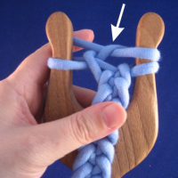

Litteä nyöri eroaa pyöreästä siinä, miten lanka pujotetaan haarukan piikkiin. Litteää on helpointa tehdä haarukkaa kääntämättä ja etu- ja takapuolesta tulee erilaiset.
Litteän nyörin harjoittelu on helpointa aloittaa jatkamalla aloitettua pyöreää nyöriä. Pidä haarukkaa niin kuin olisit aloittamassa uutta kerrosta, mutta älä laita lankaa haarukan piikin ympärille.
|  | Pujota lanka oikean piikin ympäri siten, että kerältä tuleva lanka jää nyöristä tulevan langan alle. Kerältä tuleva lanka jää haarukan taakse. Nosta oikea silmukka langan muodostaman lenkin yli. Älä käännä haarukkaa. Kiristä varoen. (Napsauta kuvaa, jos haluat nähdä sen isompana.) |
 |
Nyt pujota lanka samalla tavalla vasemman piikin ympäri. Kerältä tuleva lanka jää nyöristä tulevan alle ja lanka päätyy haarukan taakse. Nosta vasen silmukka langan muodostaman lenkin yli. Älä käännä haarukkaa. Kiristä varoen. (Napsauta kuvaa, jos haluat nähdä sen isompana.) |
{kind=link}
Huom! Nyörin rakenteesta johtuen silmukka kannattaa nostaa haarukan takapuolelta, kuten näet minun tekevän alla olevalla videollakin.
Jos video ei toimi tai liikkeet on vaikea hahmottaa, tein hidastetun videon litteän nyörin punomisesta, kokeile, jos se auttaa.

|
|
Litteän ja nelikulmaisen nyörin välillä voi vaihdella vapaasti, muutat vain tapaa, jolla lanka laitetaan haarukan piikin ympärille.